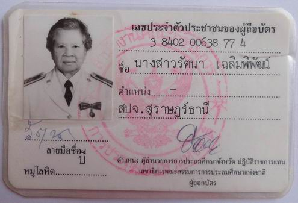
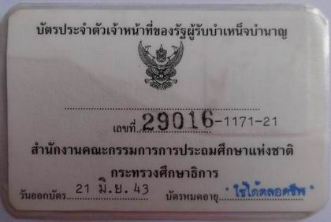
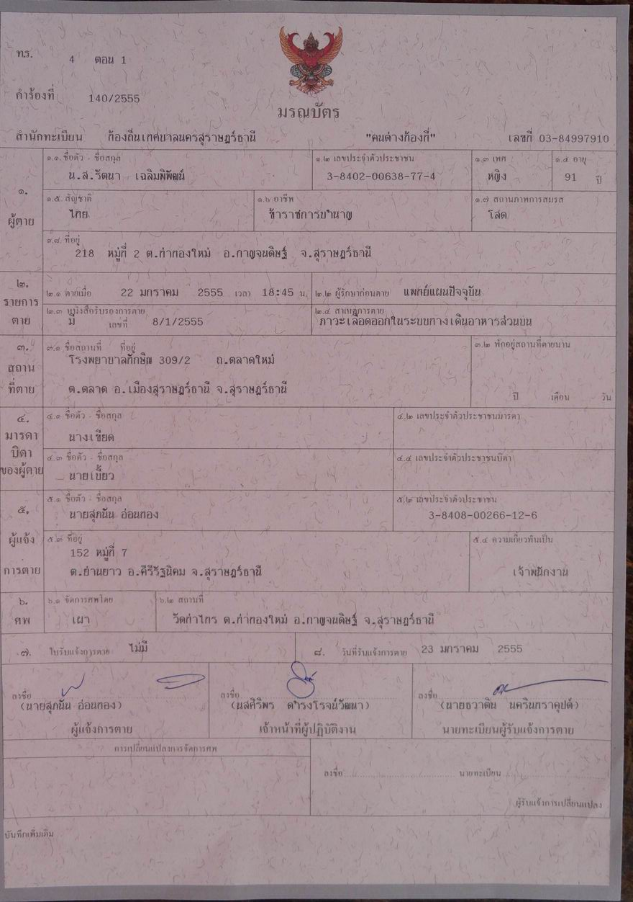
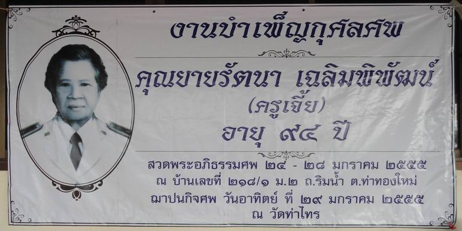

เกี่ยวกับ นางสาวรัตนา เฉลิมพิพัฒน์ (คุณครูเจี้ย)
**********************************
|
ชื่อ นางสาวรัตนา (คุณครูเจี้ย)
เฉลิมพิพัฒน์ |
|
|     |
|
หมายเหตุ.-ขอขอบคุณ นายธีระพันธ์ สันติจิตโต ตำแหน่ง นักวิเคราะห์ผังเมืองชำนาญการพิเศษ สำนักงานโยธาธิการและผังเมืองจังหวัดสุราษฎร์ธานี (ซึ่งมีฐานะป็น "หลานเขย" ของคุณครูเจี้ย) ที่ได้เอื้อเฟื้อข้อมูลและภาพถ่ายเกี่ยวกับคุณครูเจี้ยมาให้ เพื่อเป็นข้อมูลให้อนุชนรุ่นหลังได้ศึกษาค้นคว้าต่อไป
ไป Web สำนักงานเจ้าคณะภาค ๑๖
ไป Web ศูนย์ฝึกอบรมคอมพิวเตอร์วัดท่าไทร
ไป Web ศูนย์พัฒนาคุณธรรมภาคใต้
ไป Web วิทยุชุมชนตำบลท่าทองใหม่
ไป Web ชมรมวีอาร์ร้อยเกาะสุราษฎร์ธานี